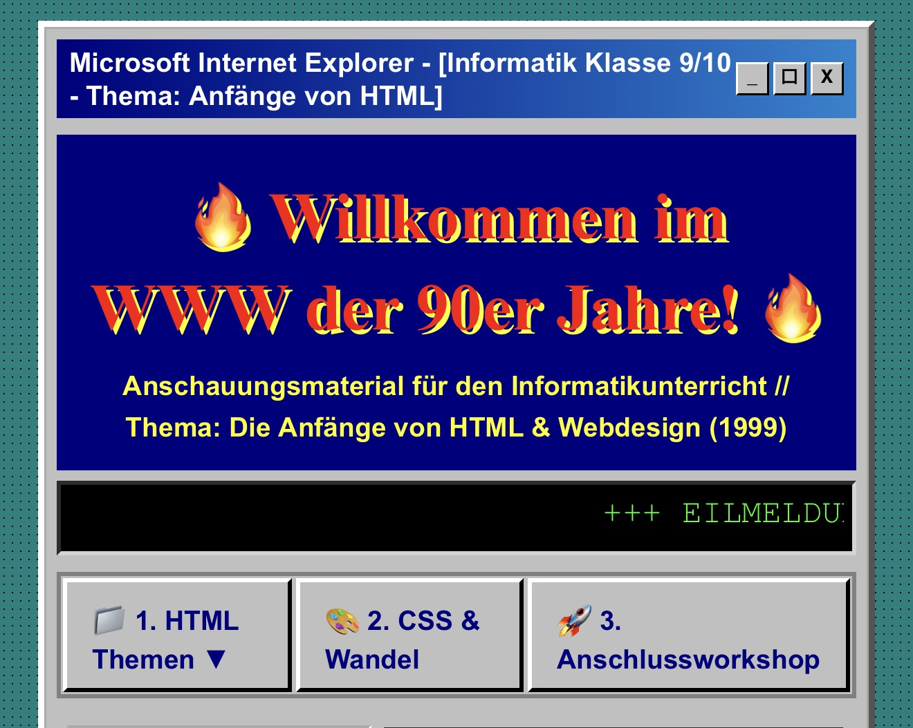
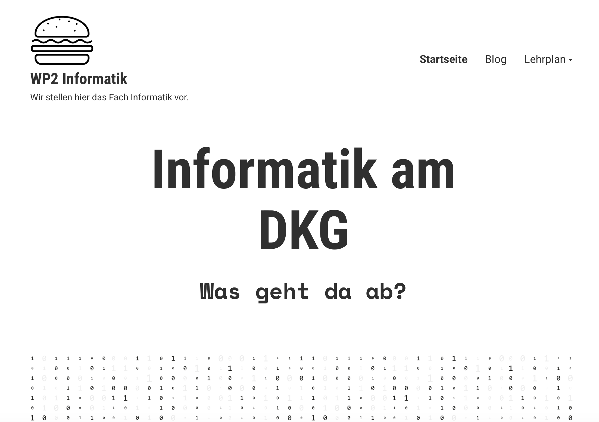

HTML
Das Fundament des Webs. Handgeschriebener Code und Struktur.
Mehr erfahren

WordPress
Baukasten & Content Management. Die Demokratisierung der Website-Erstellung.
Mehr erfahren
Bild-Platzhalter (Vibe-Coding)
Zukunft
Vibe-Coding
KI-gestützter Flow. Ideen direkt in funktionierenden Code übersetzen.
Mehr erfahren
Anleitungen & Tutorials
Schritt-für-Schritt-Guides zu den verschiedenen Ansätzen